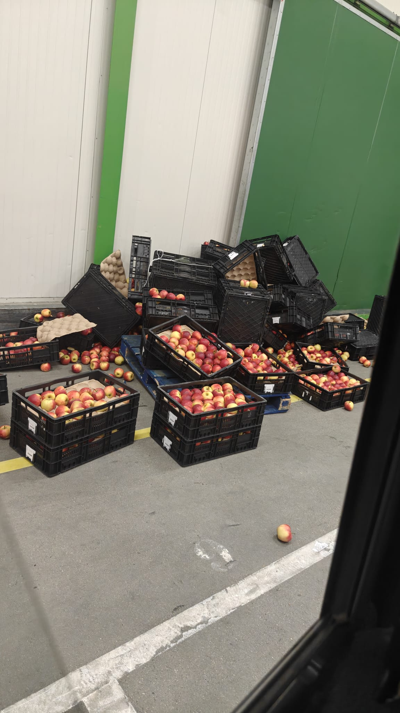

Wie ben ik?
Ik ben Roan, ik ben 18 jaar oud en woon in Waarde.
Over mij
Ik ben een student HBO-ICT en in mijn vrije tijd houd ik me graag bezig met computers en games. Ik vind het interessant om met technologie bezig te zijn en nieuwe dingen te leren. Naast mijn studie werk ik ook. Ik werk bij Vogelaar-Vredehof in Krabbendijke, ik werk daar in de logistieke sector. Hier onder zie je een gemiddelde dag op mijn werk

Mijn hobby's en interesses
In mijn vrije tijd game ik graag. Ook luister ik graag naar muziek en vind ik het leuk om naar films en series te kijken. Ik speel vooral singeplayer games of Co-op games met vrienden. Ik luister vooral naar engels talige rap en R&B.
- Gamen
- Muziek luisteren
- Films en series kijken
Mijn eigenschappen
| Eigenschap | Wat dit over mij zegt |
|---|---|
| Leergierig | Ik vind het fijn om nieuwe dingen te leren. |
| Doorzetter | Ik probeer problemen op te lossen en geef niet snel op. |
| Harde werker | Ik zet me in om mijn taken goed af te maken. |
Vind mij online
Hieronder vind je mijn social media en andere profielen